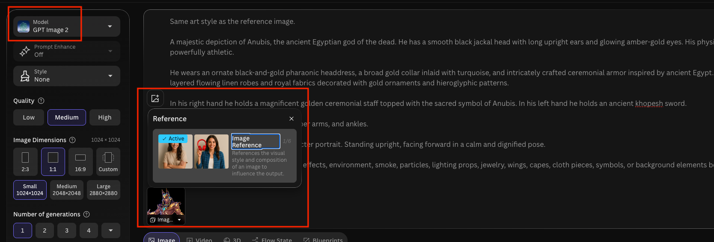
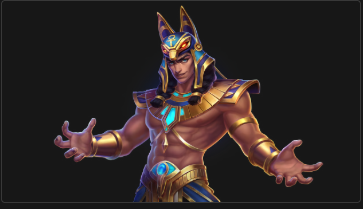
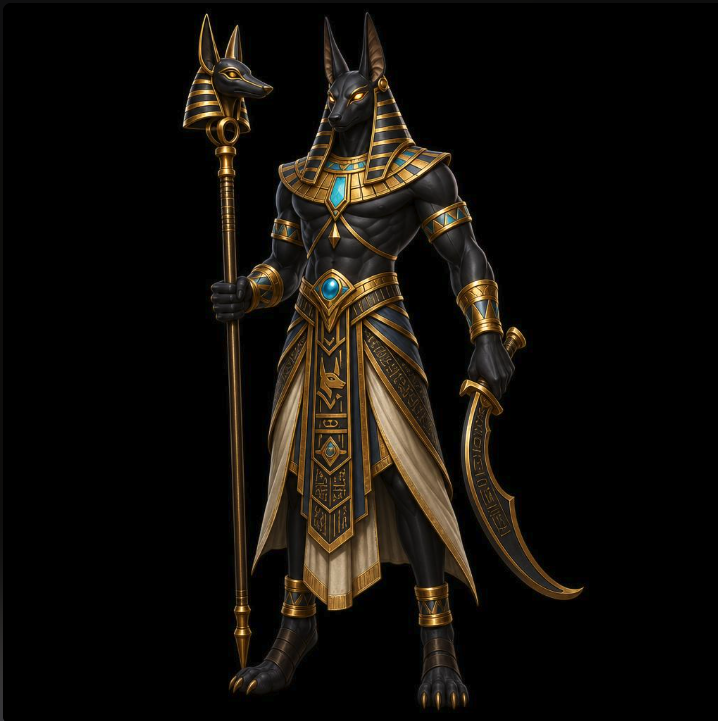

用途
Image Reference 是「餵一張參考圖給模型」，讓生成結果參考它的風格、構圖、角色或內容，而不只是靠文字描述。適合想延續某個畫風、或想固定某個角色 / 物件時使用。
步驟
-
進入 Image 生成頁，在 prompt 輸入框左側點圖片的圖示，把參考圖上傳進來。

-
這次我們實作一個阿努比斯,選好模型及參考圖片後,輸入要生成的圖片描述,再按 Generate。Same art style as the reference image. A majestic depiction of Anubis, the ancient Egyptian god of the dead. He has a smooth black jackal head with long upright ears and glowing amber-gold eyes. His physique is tall, lean, and powerfully athletic. He wears an ornate black-and-gold pharaonic headdress, a broad gold collar inlaid with turquoise, and intricately crafted ceremonial armor inspired by ancient Egypt. Around his waist hangs layered flowing linen robes and royal fabrics decorated with gold ornaments and hieroglyphic patterns. In his right hand he holds a magnificent golden ceremonial staff topped with the sacred symbol of Anubis. In his left hand he holds an ancient khopesh sword. Gold ornaments decorate his wrists, upper arms, and ankles. Pure black background. Full-body character portrait. Standing upright, facing forward in a calm and dignified pose. Do not add any extra objects, creatures, effects, environment, smoke, particles, lighting props, jewelry, wings, capes, cloth pieces, symbols, or background elements beyond those explicitly described.
- 強調風格與圖片一致
- 阿努比斯的外觀描述
- 背景與人物姿態描述
- 限制描述,避免他生成沒有提到的內容
成果對照

